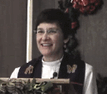

You Are Welcome Here
At Rosedale Church, we believe our life of faith is like a circle. We meet together to worship God, to study the
Scriptures and to discuss our faith. Then we put our faith in action by serving others.
We do this as a congregation through the ministries we offer to the neighborhood, such as
assisting the youth and offering our Vacation Bible School each summer. We do this by participating in mission
and justice work with other congregations in the United Church of Christ. We do this in our daily lives
at work and with family and friends. Then, finally, we come back together to be energized and renewed
through worship, study and Christian community.
About the Pastor
 The congregation is led by Rev. Ruth Wagner Bradshaw, a graduate of Andover Newton Theological School. Prior to coming to Rosedale, Rev. Bradshaw has provided pastoral leadership for churches in Kansas and Vermont.